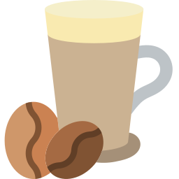
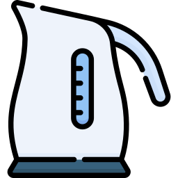

Biji Kopi

Waktu Penyeduhan

Suhu air
Ukuran Hasil Gilingan Kopi
Sobat Serba Kopi, setelah kita mengetahui jenis kopi yang bisa dicoba untuk kita kreasikan sendiri selama masa pandemi, kali ini saya ingin berbagi beberapa tips agar sobat bisa lebih menikmati kopi seduhan buatan sendiri.
Untuk membuat kopi yang enak dan beraroma yang menggugah selera, ada beberapa faktor yang harus diperhatikan dalam proses pembuatannya.
Biji Kopi
Waktu Penyeduhan
Suhu air
Ukuran Hasil Gilingan Kopi
Yuk kita bahas satu persatu !
Faktor yang paling menentukan dari rasa kopi tentu adalah jenis biji kopinya. Biji kopi mempunyai karakteristik yang
berbeda beda, ada yang mudah larut, rasanya agak manis, dan masih banyak lagi.
Karakteristik ini perlu kita kenali untuk mendapatkan hasil rasa yang kita inginkan. Tapi apa sih yang termasuk
karakteristik itu ?
Dari mana kopi berasal : Beda negara, bisa jadi beda rasa. Contohnya : kopi dari Ethiopia dikenal karena keasamannya, sedangkan dari Kolombia terkenal dengan balancenya.
Metode Pengolahan : Kopi yang diproses secara natural cenderung memiliki rasa manis, dan body tebal, kopi yang diproses secara basah (washed) cenderung memiliki rasa asam, sedangkan yang diproses secara honey cenderung memiliki rasa yang bervariasi/kompleks.
Spesies dan Varietas : Setiap varietas kopi pasti mempunyai rasa yang berbeda juga.
Faktor berikutnya terjadi ketika kita telah selesai menggiling kopi. Proses penyeduhan yang terjadi dalam waktu yang
pendek berdampak pada jumlah ekstraksi yang relatif sedikit. Sebaliknya, semakin lama proses penyeduhan, maka
semakin banyak proses ekstraksi yang terjadi.
Jadi, jika kamu ingin kopi yang berasa pahit, biarkan waktu penyeduhan yang agak lama. Jika ingin lebih berasa
buah-buahan, mempercepat proses penyeduhan akan lebih baik.
Cara yang mudah untuk mempelajari lebih lanjut tentang cara kerja waktu penyeduhan bisa kamu coba menggunakan
Aeropress. Gunakan ukuran gilingan (grind-size), suhu air, dan kopi yang sama, dan mulailah bereksperimen dengan
waktu penyeduhan yang berbeda-beda, dan rasakan hasilnya!
Jika kamu memasukkan gula ke dalam cangkir berisi air dingin, maka akan sulit larut, tapi jika kamu memasukkannya ke
dalam air panas, maka akan cepat larut. Hal ini berlaku dengan di kopi, semakin tinggi suhu air, maka semakin cepat
kopi terekstraksi.
Jadi jika kamu sudah mendapatkan waktu penyeduhan yang tepat dan grind size yang tepat, tapi rasa kopi kamu masih
terlalu pahit, kamu harus menurunkan suhu airnya. Tapi jika kopi kamu terlalu asam, kamu bisa menaikkan suhu airnya.
Menurut Tristan Stephenson dalam bukunya The Curious Barista’s Guide to Coffee, “Senyawa astringen (rasa yang
tertinggal setelah meminum kopi karena adanya sensasi asin pada sisi lidah) akan mengekstrak pada suhu 100C, itulah
mengapa kita menghindari penggunaan suhu air diatas 95C.”
Sementara SCA (Specialty Coffee Association) merekomendasikan penggunaan air di suhu antara 90C sampai 96C.
Efek dari kualitas hasil gilingan kopi yang halus akan membuat proses ekstraksi menjadi lebih lambat, sedangkan
untuk hasil gilingan kopi yang kasar akan membuat prosesnya menjadi lebih cepat.
Untuk mendapatkan rasa yang pas, diperlukan kualitas gilingan kopi yang konsisten. Oleh karena itu, sebaiknya dalam
proses penggilingan menggunakan grinder. Grinder dengan merek Hario atau Tiamo bisa kamu jadikan pilihan.
Proses pembuatan kopi jika dilakukan manual mungkin akan terlihat rumit dan terlalu kompleks karena harus
mempertimbangkan berbagai
faktor. Namun, kelebihannya adalah kita bisa mengcustom citarasa dari kopi yang kita buat sendiri. Saya
mendukung Sobat Kopi untuk bereksperimen dengan mengubah ubah variabel faktor diatas sampai sobat menemukan resep
dan kadar yang tepat berdasarkan preferensi sobat.
Sampai ketemu di kesempatan berikutnya !